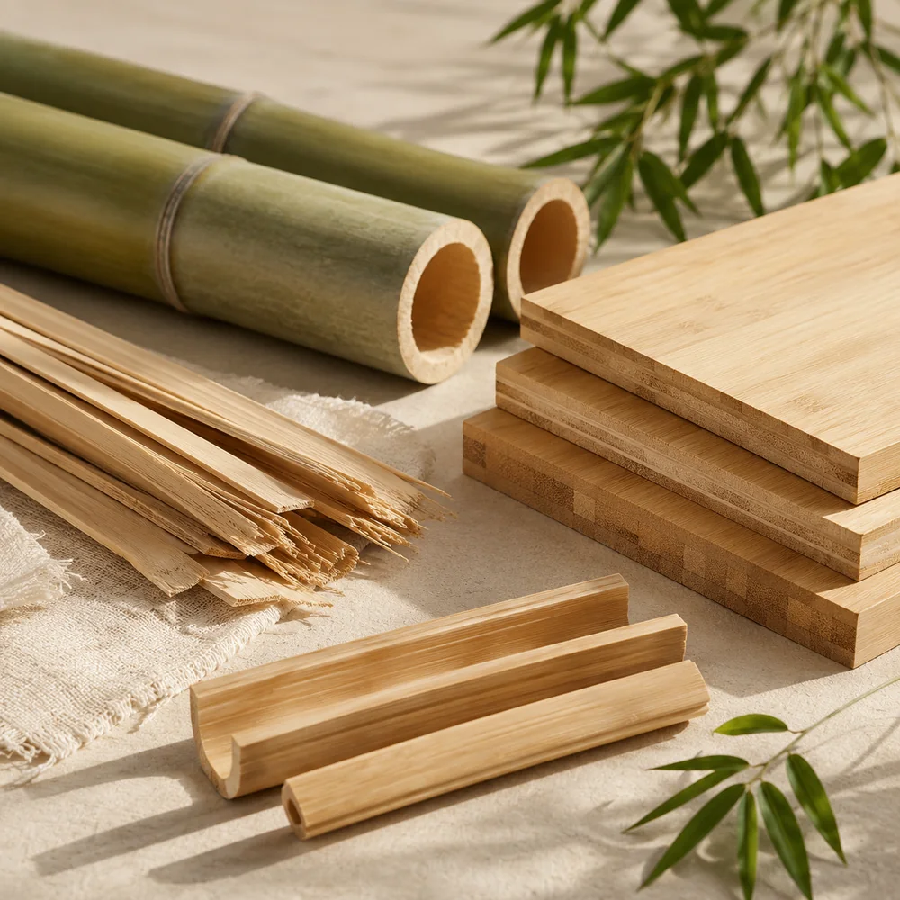
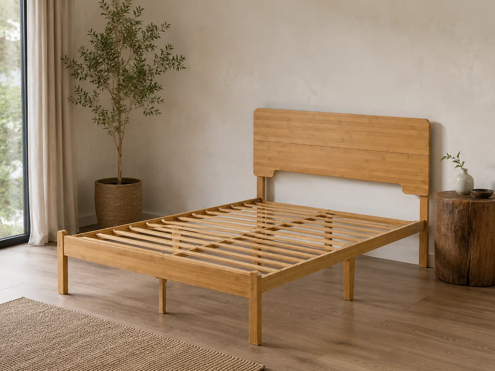

On this page
- A Different Kind of Growth
- Why the Growth Story Matters in Furniture
- From Bamboo Culm to Furniture Component
- A Bamboo Bed Frame Is an Engineered Product
- What Bamboo Adds to a Bed Frame Collection
- The Sustainability Claim Needs Precision
- Where Bamboo Bed Frames Fit Commercially
- What Sourcing Teams Should Confirm Before Development
- From a Growing Material to a Market-Ready Product
- Frequently Asked Questions
A bamboo bed frame begins long before its structure, dimensions, packaging, or price are discussed.
It begins in a bamboo grove.
Unlike most timber trees, bamboo belongs to the grass family. New bamboo culms grow from an established underground rhizome system, allowing a managed bamboo stand to continue producing new growth without restarting from a newly planted tree after every harvest.
This growth pattern is one reason bamboo has attracted attention as a renewable material for furniture, construction, household products, and other industrial applications. However, the real value of bamboo in a bed frame is not based on growth speed alone.
For furniture decision-makers, bamboo brings together three different forms of value:
- a recognizable natural-material story;
- a warm and differentiated visual identity;
- and a material that can be engineered into practical furniture components.
The result is not simply a substitute for a wooden or metal bed. It is a distinct product direction with its own market positioning, structural requirements, and sourcing considerations.
From Bamboo Grove to Bamboo Bed Frame
A short visual journey from bamboo growth to engineered material and a finished bamboo bed frame direction.
A Different Kind of Growth
When people imagine furniture materials, they often think of trees growing slowly over many years before being cut and processed into lumber.
Bamboo grows differently.
A mature bamboo plant develops an underground rhizome network. New shoots emerge from this established system and develop into individual culms. Depending on the species and growing conditions, bamboo can grow rapidly and can be managed on shorter harvest rotations than many conventional timber resources.
This does not mean that every bamboo species grows at the same rate or that every culm is immediately suitable for furniture production. Species, age, climate, plantation management, harvesting time, moisture control, and post-harvest treatment all affect the final material.
The more accurate story is therefore not that bamboo is a 'miracle material.' It is that bamboo offers a renewable material system with a growth and regeneration pattern that is fundamentally different from conventional timber.
For furniture collections, that distinction can become part of the product's identity.
Why the Growth Story Matters in Furniture
Furniture professionals are not only evaluating physical materials. They are also evaluating a product story that must make sense to retailers, online sellers, distributors, and end customers.
A conventional metal platform bed is usually positioned around practical benefits such as strength, cost efficiency, compact packaging, under-bed storage, and easy assembly.
A bamboo bed frame introduces another layer.
Its natural surface, visible grain, warm color, and material origin give it an immediate visual identity. Even before the technical specifications are explained, customers can recognize that it belongs to a different product category from a standard black or white metal frame.
This makes bamboo particularly relevant for product lines built around:
- natural and warm interior styles;
- compact and modern living;
- material-conscious product positioning;
- lifestyle-oriented retail;
- online furniture collections;
- and private-label differentiation.
The material story helps attract attention, but it cannot replace product performance. The frame must still be stable, practical to assemble, suitable for flat-pack delivery, and appropriate for the intended market.

From Bamboo Culm to Furniture Component
A finished bamboo bed frame is not normally made by simply cutting several bamboo poles and connecting them together.
Industrial bamboo furniture usually requires the raw bamboo to be converted into more stable and workable components.
Depending on the product design and manufacturing method, the process may include:
- Selecting suitable bamboo by species, age, diameter, and condition.
- Cutting and splitting the culms into strips or sections.
- Drying and treating the material to improve stability and durability.
- Arranging, laminating, or pressing bamboo strips into boards or structural components.
- Machining the components into side rails, legs, headboards, or other parts.
- Sanding and applying the required surface finish.
- Combining bamboo components with hardware and, where appropriate, steel support structures.
- Completing trial assembly, inspection, and flat-pack packaging.
The exact process varies by construction, finish, product positioning, and supplier capability.
Post-harvest treatment and moisture management are especially important because natural bamboo can be vulnerable to biological damage and dimensional changes when it is not processed appropriately. Furniture performance therefore depends not only on the original plant, but also on how the material is treated, engineered, joined, finished, and protected.
A Bamboo Bed Frame Is an Engineered Product
The word 'natural' can sometimes create the impression that a bamboo bed frame is a simple craft product.
In reality, a commercially viable flat-pack bamboo bed frame is an engineered furniture product.
The development team needs to consider:
Structural layout
The side rails, centre support, legs, headboard, support system, and connection points must work together as a complete structure.
Material consistency
Natural appearance should be maintained while controlling variations that could affect machining, assembly, surface quality, or packaging.
Connection design
Connections must provide suitable stability while remaining understandable for the customer during assembly.
Support system
Depending on the design, a bamboo-based frame may be combined with bamboo, wooden, or steel support components. Apexnix bamboo bed frame product directions, for example, can be discussed with steel slats or customized support structures according to the product requirement.
Surface protection
The finish should support the intended appearance while helping protect the material during normal use, packaging, and transportation.
Flat-pack packaging
Long bamboo components, finished surfaces, hardware, and connecting parts must be arranged and protected carefully inside the carton.
These details determine whether a bamboo bed frame remains only an attractive concept or becomes a repeatable product suitable for real retail and distribution channels.

What Bamboo Adds to a Bed Frame Collection
Bamboo should not necessarily be treated as a replacement for an entire metal bed frame range.
In many B2B product lines, its stronger role is as a differentiated supplementary category.
A metal bed frame can continue to serve the core volume segment, where price, durability, packaging efficiency, and broad market acceptance are the main priorities.
A bamboo bed frame can then add:
- a warmer material direction;
- a stronger visual identity;
- an alternative to standard metal-frame aesthetics;
- a natural-material story for product marketing;
- and a higher level of differentiation for selected collections.
This combination allows a retailer, importer, or online furniture brand to cover more than one customer preference without abandoning its core product category.
For example, a product line could include:
- practical metal platform beds for mainstream demand;
- decorative metal beds for style-oriented customers;
- and bamboo bed frames for natural or lifestyle-focused collections.
The commercial value therefore comes not only from the bamboo product itself, but from the role it plays within the wider bed frame assortment. For tailored dimensions, structures, finishes, and packaging, review our OEM and custom bed frame development support.
The Sustainability Claim Needs Precision
Bamboo is often described simply as 'eco-friendly.'
That description may be attractive, but it is too broad to evaluate a finished product.
The environmental profile of a bamboo bed frame can be influenced by:
- where and how the bamboo is grown;
- whether the material is responsibly sourced;
- the age and quality of the harvested bamboo;
- energy used in processing and drying;
- adhesives and surface finishes;
- production waste and material utilization;
- packaging materials;
- transportation distance;
- product durability;
- repairability and replacement parts;
- and end-of-life treatment.
For this reason, responsible product communication should avoid claims such as 'zero impact,' 'completely sustainable,' or '100% environmentally friendly' unless they are supported by specific evidence.
More credible descriptions include:
- renewable material story;
- natural-material positioning;
- bamboo-based furniture direction;
- nature-inspired product collection;
- or a differentiated material alternative for selected furniture programs.
This language still communicates the value of bamboo without turning a complex supply-chain question into an unsupported marketing claim.
Where Bamboo Bed Frames Fit Commercially
Bamboo bed frames are particularly relevant when the target customer values both product appearance and material identity.
Potential applications include:
Lifestyle and natural-style retail
The visible bamboo surface supports stores and collections built around warm, calm, minimal, or nature-inspired interiors.
Online furniture collections
A distinctive material and recognizable product story can help the product stand apart from large numbers of visually similar metal platform beds.
Private-label programs
Bamboo frames can be developed through different headboard styles, dimensions, finishes, packaging, labels, and presentation directions.
Compact-living collections
Clean platform structures and storage-friendly clearance can support selected apartment and modern-living product lines.
Supplementary bed frame categories
Importers and wholesalers with an established metal bed range can use bamboo as a controlled category extension rather than a complete replacement for their existing products.
Bamboo may be less suitable when the purchasing decision is based entirely on the lowest possible price, when the product is intended for highly industrial accommodation use, or when the sales channel cannot communicate the value of the material to its customers.
What Sourcing Teams Should Confirm Before Development
Before developing or sourcing a bamboo bed frame, sourcing teams should confirm more than the external appearance.
Important discussion points include:
- the bamboo-based material composition;
- the frame and support-system structure;
- target mattress sizes and market standards;
- bed height and under-bed clearance;
- headboard and footboard direction;
- connection and assembly method;
- surface finish and acceptable natural variation;
- packaging protection;
- hardware organization;
- instruction-manual requirements;
- private-label presentation;
- estimated order quantity;
- target sales channel;
- and target price positioning.
A clear product brief helps the supplier balance material use, structure, appearance, packaging size, assembly experience, and commercial cost.
From a Growing Material to a Market-Ready Product
The bamboo story begins with growth, but a successful bamboo bed frame depends on what happens after the material leaves the grove.
It must be selected, processed, engineered, finished, assembled, inspected, packaged, and positioned for a real market.
For B2B sourcing teams, this is the most useful way to understand bamboo:
not only as a rapidly renewable natural resource, and not only as an attractive furniture surface, but as the starting point for a carefully developed product category.
When the material story and the product engineering support each other, a bamboo bed frame can offer something that a conventional bed frame cannot easily reproduce: a visible connection between natural growth, modern manufacturing, and differentiated furniture design.
Frequently Asked Questions
Is a bamboo bed frame made from whole bamboo poles?
Not necessarily. Many commercial bamboo furniture products use bamboo strips, laminated bamboo boards, or other processed bamboo-based components. The exact material construction should be confirmed through the product specification and bill of materials.
Is a bamboo bed frame automatically more sustainable than a wooden or metal bed?
No single material automatically guarantees a more sustainable finished product. Sourcing, processing, adhesives, finishes, transportation, packaging, durability, and product lifespan all need to be considered.
Can bamboo bed frames be customized for different markets?
Yes. Depending on manufacturing feasibility, bamboo bed frames can be discussed in different mattress sizes, frame heights, headboard styles, support systems, finishes, packaging formats, and private-label directions.